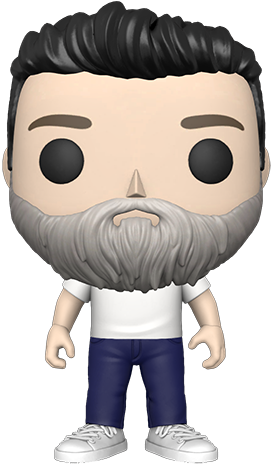

I serve as the Chief Software Architect within my organization, overseeing the entire lifecycle of the technological infrastructure. My professional DNA is rooted in a deep, versatile understanding of computer systems; I function as the chief programmer, database engineer, and application designer, making me responsible for all things related to technology implementation and strategy. My core expertise lies in identifying organizational bottlenecks and deploying innovative digital solutions to solve them.
What truly drives my work is the inherent challenge of problem-solving. I am relentless in my pursuit of understanding underlying systems and applying creative technology to automate processes, consistently building custom computer programs that deliver specific, high-value functions and eliminate manual, time-intensive tasks. This commitment to automation has been central to enhancing operational speed and accuracy.
My innovative and creative nature is essential to this role, as I constantly design new methods for achieving peak efficiency. While I am an acknowledged introvert who values focused, independent work over public visibility, my impact is seen directly through the robust, elegant, and highly functional technological backbone that supports my organization’s success.